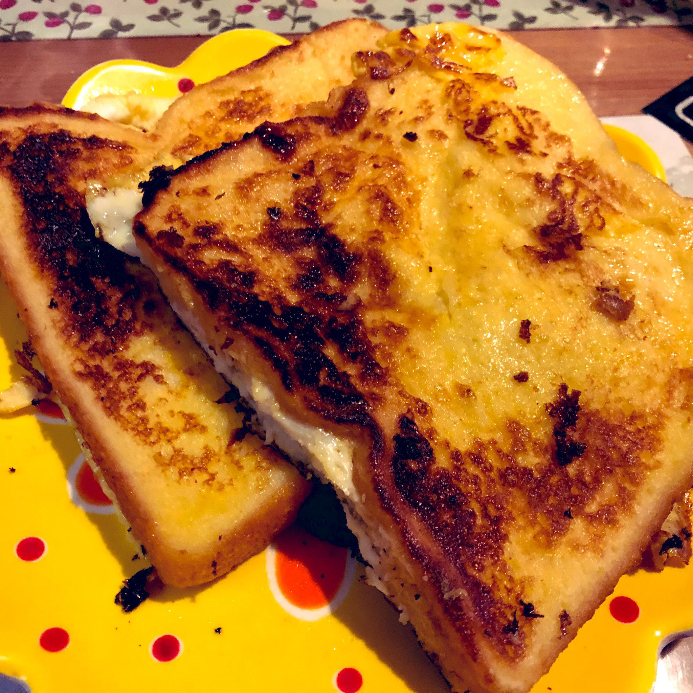
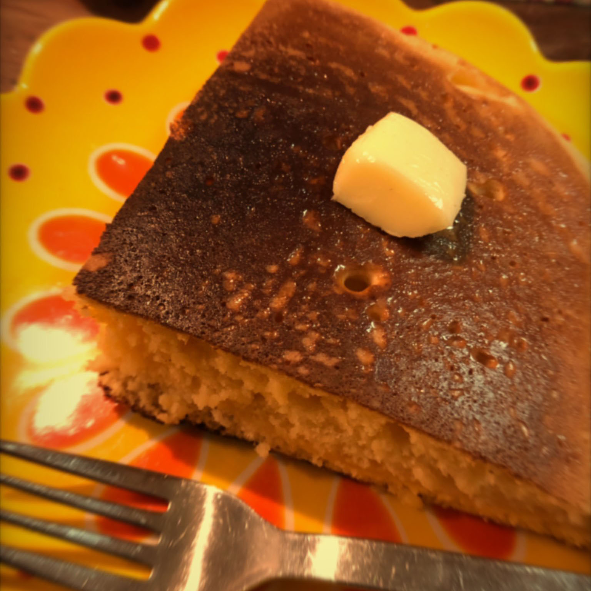
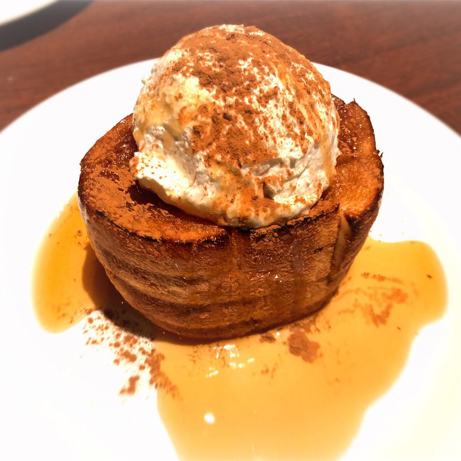

嘉手川航太朗って誰？
自己紹介をさせていただきます。
嘉手川 航太朗（かでかわ こうたろう）と申します。
よく「喜手川（きでかわ）」や「古手川（こてがわ）」「航太郎（郎ではなく朗です）」などと間違われます(;・∀・)
※中高の学校の先生からも間違えて覚えられていました……
最近のマイブームはフレンチトーストを作ることです!!( ･´ｰ･｀)ﾄﾞﾔｧ
趣味はアニメやゲーム。ゲームのフレンドが少ないので、現在フレンド募集中です！！
プレイしているゲームについては趣味ページでまとめたので是非見てください～
よろしくお願いします！m(_ _)m
好きな食べ物は？
「フレンチトースト」「ホットケーキ」「卵料理」など
  好きなアーティストは？
「HoneyWorks」です！
HoneyWorks（通称ハニワ）とは
楽曲・動画などを制作するクリエイターユニットです。
僕がおすすめしたい曲は……
- 「金曜日のおはよう
- 「私、アイドル宣言」
- 「東京ウィンターセッション」
です！
嘉手川の○○
嘉手川の生活
- 月曜日から木曜日
- 起きる→走る→電車に乗る→学校に到着→いつの間にか教室が閉まる時間→電車に乗る→寝る→ココハドコ?→電車に乗る→帰宅→寝る
- 金～土曜日
- 起きる→寝る→起きる→ゲーム→勉強→ゲーム→勉強→ゲーム→勉強→ゲーム→次の日
嘉手川のいろいろ
- ・極度な人見知りで、対話スキルゼロ。
- ・高3の1月まではゲームクリエイターを目指していたが、web系にルートチェンジ。
- ・ちょくちょく敬語になってしまう癖がある。
- ・ゲーム中のテンションが高い。
- ・面白そうなことはなんでもやってしまう。
- ・速読と水中での息止めが得意。
- ・LINEの友達は
公式アカウント＞親戚や家族、修学旅行等で出会った方々＞友達
最後に
嘉手川航太朗です。自分からはあまり話しません。(話題が無いのです(´;ω;｀))
話しかけられれば話します…多分
僕もわからないことだらけなので、これから頑張っていきたいと思います。
よろしくお願いします!!